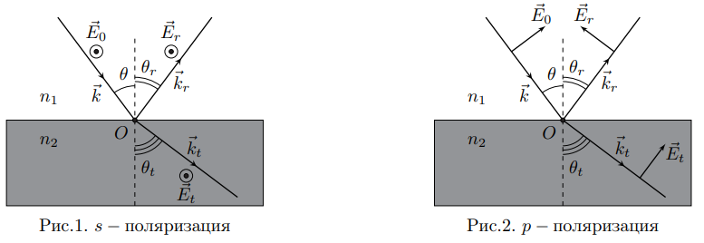
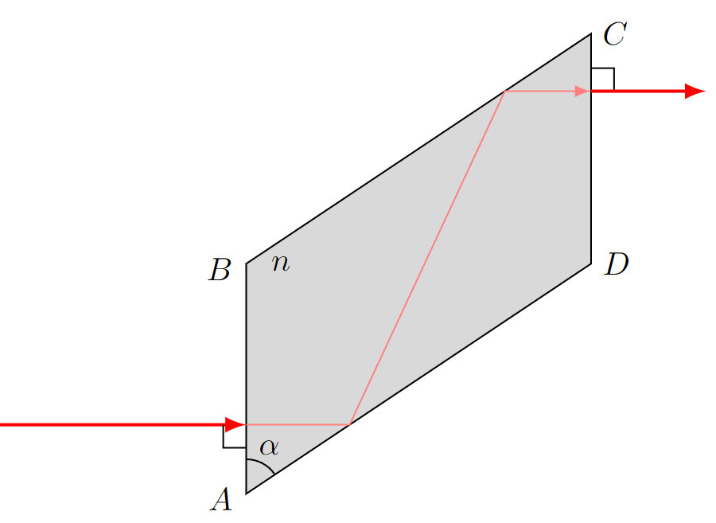
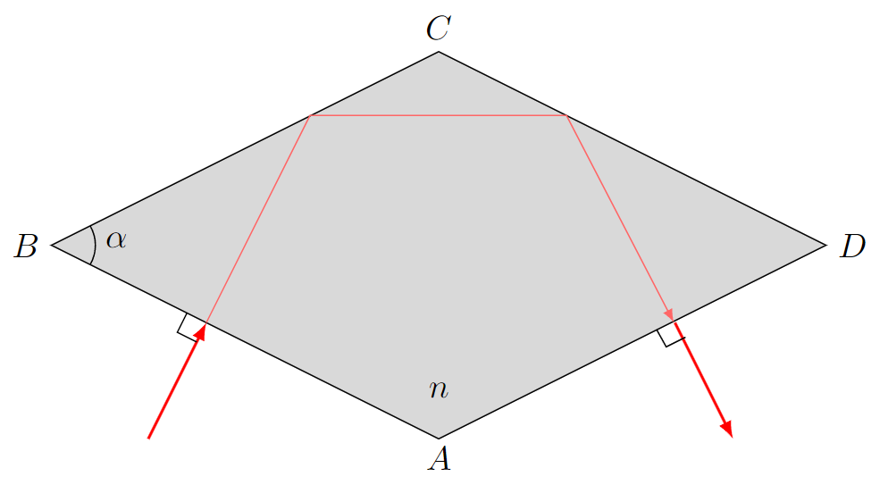
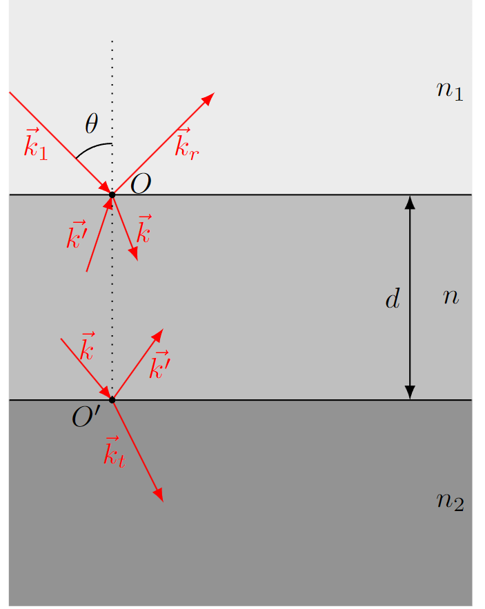
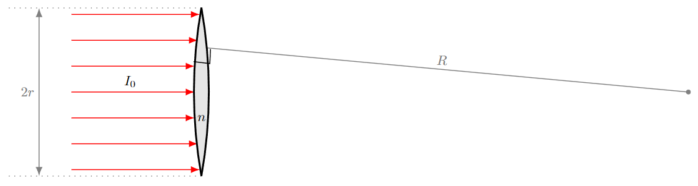

Y24 (2024) — English translation
Optics coating is a technology for treating the surface of lenses, prisms and other optical parts to reduce the reflection of light from optical surfaces bordering air. This allows you to increase the light transmission of the optical system and increase the contrast of the image by reducing interfering parasitic reflections in the optical system. Most optical systems used, for example, camera and video camera lenses, consist of many lenses, and reflection from each glass-air interface reduces the transmitted useful light flux. Without the use of clearing methods, the drop in the intensity of transmitted light in a multi-lens system can reach several tens of percent. Therefore, all modern lenses use coated optics. This problem is devoted to the theoretical foundations of optical bleaching.
Let a plane electromagnetic wave with wave vector $\vec{k}$ and electric field strength $\vec{E}_0$ fall from the medium $1$ onto the interface between the media $1$ and $2$ at an angle $\theta$ in the direction to the normal. The refractive indices of the media $1$ and $2$ are equal to $n_1$ and $n_2$, respectively. When hitting the interface between the media, the electromagnetic wave is partially reflected from the medium $2$ and partially passes into it. In the entire problem, the index $r$ corresponds to the reflected wave, and the index $t$ to the wave transmitted into medium 2, therefore the electric field strengths in the reflected and transmitted waves are designated $\vec{E}_r$ and $\vec{E}_t$, respectively, the wave vectors of the reflected and transmitted waves are designated $\vec{k}_r$ and $\vec{k}_t$, respectively, and the reflection and refraction angles are designated $\theta_r$ and $\theta_t$, respectively. An electromagnetic wave can be represented as a superposition of two: $s$-polarized and $p$-polarized. In the case of a $s$-polarized wave, the directions of the electric field strength vectors are perpendicular to the plane containing the normal vector to the surface and the wave vector of the incident wave. In the case of a $p$-polarized wave, the directions of the electric field strength vectors lie in the plane containing the normal vector to the surface and the wave vector of the incident wave. The positive directions of the vectors $\vec{E}_0$, $\vec{E}_r$ and $\vec{E}_t$ at point $O$, corresponding to the incident, reflected and transmitted waves, respectively, are shown in Fig. 1. for the $s$-polarized wave and in Fig. 2. for the $p$-polarized wave.

Within the framework of the problem, consider all media to be nonmagnetic ($\mu\approx 1$), and all waves to be monochromatic. Also consider that there are no external currents or free charges at the interface. To describe the electric field strengths, let's move on to complex amplitudes. Next, take all directions of electric field strengths as those shown in the figure, and write down the magnitudes of electric field strengths in the following form: $$E_{пад}=\operatorname{Re}\left(E_0e^{i(\omega t-\vec{k}\vec{r})}\right)\qquad E_{отр}=\operatorname{Re}\left(E_re^{i(\omega t-\vec{k}_r\vec{r})}\right)\qquad E_{прош}=\operatorname{Re}\left(E_te^{i(\omega t-\vec{k}_t\vec{r})}\right){.} $$Здесь $E_0$, $E_r$ и $E_t$ – комплексные амплитуды напряжённостей электрический полей падающей, отражённой и прошедшей волн соответственно в точке $O$, от которой отсчитывается радиус-вектор $\vec{r}$. Введём также комплексные коэффициенты отражения и прохождения по амплитуде $r$ и $t$ соответственно. Они определяются следующими выражениями: $$r=\cfrac{E_r}{E_0}\qquad t=\cfrac{E_t}{E_0}{.} $$
Let us return to the consideration of the waves reflected and transmitted through the interface between the media $1$ and $2$.
Let the value $\theta$ exceed the angle $\theta_{crit}$ corresponding to the angle of total internal reflection (hereinafter referred to as TIR). In this case, the value of the angle $\theta_t$ is complex, while the Fresnel formulas retain their form. There are two angles $\theta_t$ that satisfy the condition $n_1\sin\theta=n_2\sin\theta_t$, but it can be uniquely chosen taking into account the fact that the amplitude of the transmitted wave attenuates with distance from the interface.
Let $\delta=\delta_p-\delta_s$.
To obtain circular polarization from linear polarization, so-called quarter-wave plates are used in polarizing devices. As a rule, these plates are made of quartz and their action is based on the birefringence effect. However, such plates can only be used in a narrow range of wavelengths. Analogues of quarter-wave plates can be devices based on the air defense effect. These devices make it possible to study a much wider range of wavelengths, and therefore have found wide practical application. In this part of the task you are invited to familiarize yourself with two types of such devices.
One of the devices based on the air defense effect is a Fresnel rhombus, the cross section of which is a parallelogram (see Fig. 3). A linearly polarized electromagnetic wave is incident on the face $AB$ of the Fresnel rhombus, perpendicular to the plane of the figure, the wave vector $\vec{k}$ of which is perpendicular to $AB$. The angle $\alpha=\angle BAD$ is chosen in such a way that the wave experiences two total reflections from the faces $AD$ and $BC$ of the Fresnel rhombus, due to which a phase shift equal to $\pi/2$ occurs between the $p$ and $s$ polarizations. Let a Fresnel rhombus be in air with a refractive index equal to one and made of a material with a refractive index $n=1{.}510$. Rice. 3. Fresnel rhombus
One of the devices based on the air defense effect is a Fresnel rhombus, the cross section of which is a parallelogram (see Fig. 3). A linearly polarized electromagnetic wave is incident on the face $AB$ of the Fresnel rhombus, perpendicular to the plane of the figure, the wave vector $\vec{k}$ of which is perpendicular to $AB$. The angle $\alpha=\angle BAD$ is chosen in such a way that the wave experiences two total reflections from the faces $AD$ and $BC$ of the Fresnel rhombus, due to which a phase shift equal to $\pi/2$ occurs between the $p$ and $s$ polarizations. Let a Fresnel rhombus be in air with a refractive index equal to one and made of a material with a refractive index $n=1{.}510$.

Another type of quarter-wave plate is the Mooney diamond (see Fig. 4). A linearly polarized electromagnetic wave, the wave vector $\vec{k}$ of which is perpendicular to $AB$, falls on the face $AB$ of the Mooney rhombus, perpendicular to the plane of the figure. The angle $\alpha=\angle ABC$ is chosen in such a way that the wave experiences two total reflections from the faces $BC$ and $CD$ of the Mooney rhombus, due to which a phase shift equal to $\pi/2$ occurs between the $p$ and $s$ polarizations. Let a Mooney diamond be in air with a refractive index of one and made of a material with a refractive index of $n=1{.}510$. Rice. 4. Diamond Mooney
Another type of quarter-wave plate is the Mooney diamond (see Fig. 4). A linearly polarized electromagnetic wave is incident on the face $AB$ of the Mooney rhombus, perpendicular to the plane of the figure, the wave vector $\vec{k}$ of which is perpendicular to $AB$. The angle $\alpha=\angle ABC$ is chosen in such a way that the wave experiences two total reflections from the faces $BC$ and $CD$ of the Mooney rhombus, due to which a phase shift equal to $\pi/2$ occurs between the $p$ and $s$ polarizations. Let a Mooney diamond be in air with a refractive index of one and made of a material with a refractive index of $n=1{.}510$.

Note: In all subsequent paragraphs, consider all angles of incidence such that electromagnetic waves do not experience complete reflection at the interface.
As you can see in the previous parts of the problem, the amplitude of the electric field strength in the reflected wave is quite comparable to the amplitude of the electric field strength in the incident wave. This causes, for example, glass plates to cast reflections. When glass is used to make glasses, the glare effect is undesirable and it turns out that it can be eliminated by applying a thin layer of a substance of another material to the surface of the lens. The layer material and its thickness are selected in such a way that the total amplitude of the wave reflected from the surface of the lens becomes zero. This technology is called antireflection coating of optics, and the applied layer is called antireflection coating. In this part of the problem, you have to determine the possible values of the refractive index and thickness of the substance at which the total amplitude of the reflected wave becomes zero.
Let us consider the media $1$ and $2$ with refractive indices $n_1$ and $n_2$, respectively, separated by a plane-parallel plate of thickness $d$ with refractive index $n$. Let a plane electromagnetic wave fall from the medium $1$ onto the plate at an angle $\theta$ to the normal. As a result of multiple reflections and refractions, a superposition of 5 electromagnetic waves is formed, shown in Fig. 5, which correspond to 5 wave vectors. Wave vector $\vec{k}_1$ corresponds to an electromagnetic wave incident on the interface between media with refractive indices $n_1$ and $n$ from medium $1$, wave vectors $\vec{k}_r$ and $\vec{k}_t$ correspond to electromagnetic waves reflected from the plate and transmitted through it, and wave vectors $\vec{k}$ and $\vec{k}'$ correspond to electromagnetic waves propagating in the plate. The radius vector $\vec{r}$ of each of the five waves under consideration is measured from the point $O$, which belongs to the interface between media with refractive indices $n_1$ and $n$ (see the form of representation of electric field strengths in part $A$). Let us denote the complex amplitudes of the electric field strengths at the point $O$ corresponding to the wave vectors $\vec{k}_1$, $\vec{k}$, $\vec{k'}$, $\vec{k}_r$ and $\vec{k}_t$ as $E_1$, $E$, $E'$, $E_r$ and $E_t$.
Rice. 5. Superposition of waves

Let us introduce the following notation: $r_1$ – reflection coefficient of a wave with wave vector $\vec{k}_1$ from the interface between media with refractive indices $n_1$ and $n$; $t_1$ – coefficient of transmission of a wave with wave vector $\vec{k}_1$ through the interface between media with refractive indices $n_1$ and $n$; $r_2$ – reflection coefficient of a wave with wave vector $\vec{k}$ from the interface between media with refractive indices $n_2$ and $n$; $t_2$ – coefficient of transmission of a wave with wave vector $\vec{k}$ through the interface between media with refractive indices $n_2$ and $n$; $r'_1$ – reflection coefficient of a wave with wave vector $\vec{k'}$ from the interface between media with refractive indices $n_1$ and $n$; $t'_1$ is the coefficient of transmission of a wave with wave vector $\vec{k'}$ through the interface between media with refractive indices $n_1$ and $n$.
Let us introduce the following notation:
Let us consider the point $O$ of the interface between media with refractive indices $n$ and $n_1$. Electromagnetic waves with electric field strengths $\vec{k}_1$ and $\vec{k'}$ converge on it, and electromagnetic waves with field strengths $\vec{k}_r$ and $\vec{k}$ diverge (see Fig. 5). In this case, each of the diverging waves can be represented as a superposition of transmitted and reflected converging waves.
Now consider the point $O'$ of the interface between media with refractive indices $n_2$ and $n$. The segment $OO'$ is perpendicular to both interfaces. A wave with wave vector $\vec{k}$ converges to the boundary, and waves with wave vectors $\vec{k}_t$ and $\vec{k'}$ diverge (see Fig. 5).
Next, we consider the case of only normal incidence, for which the $s$ and $p$ polarizations are virtually equivalent to each other. As a rule, the refractive index $n$ and the thickness $d$ of the antireflection coating are determined for the case of normal incidence.
Let the wavelength of light incident on the interface between media with refractive indices $n_1$ and $n$ from medium $1$ be equal to $\lambda_1$.
Let us consider a biconvex lens made of a substance with refractive index $n$ and located in air. The radius of curvature of each of the lens surfaces is $R$, and the radius of the lens is $r\ll R$. A parallel beam of light with intensity $I_0$ falls on the lens parallel to its main optical axis. The speed of light in vacuum is $c$. As a rule, the equality of the illumination amplitudes of the light field in front of the lens and immediately behind it is taken for granted, but this is absolutely not the case. To make the light field of the reflected wave reflected from the spherical surface equal to zero, the lens is covered with an antireflective coating on both sides. The thickness of the antireflective coating can be neglected compared to the thickness of the lens.
Consider a biconvex lens made of a substance with refractive index $n$ and located in air. The radius of curvature of each of the lens surfaces is $R$, and the radius of the lens is $r\ll R$. A parallel beam of light with intensity $I_0$ falls on the lens parallel to its main optical axis. The speed of light in vacuum is $c$. As a rule, the equality of the illumination amplitudes of the light field in front of the lens and immediately behind it is taken for granted, but this is absolutely not the case. To make the light field of the reflected wave reflected from the spherical surface equal to zero, the lens is covered with an antireflective coating on both sides. The thickness of the antireflective coating can be neglected compared to the thickness of the lens.

Source: https://pho.rs/p/3868